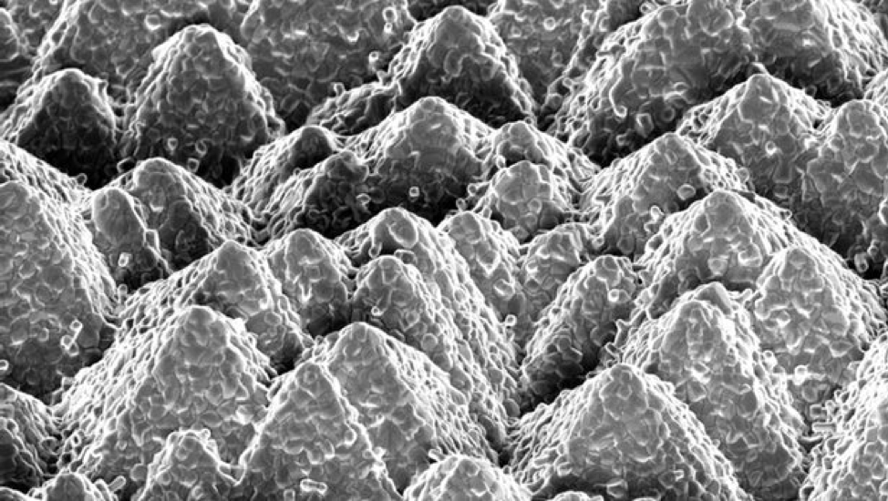

Silicon has long been recognized as the go-to material for solar cell technology because it is inexpensive, stable, and efficient. Unfortunately, silicon is fast approaching its theoretical efficiency limit, but emerging research results show that pairing silicon up with other materials could help break through the silicon efficiency ceiling. Now, researchers at EPFL (École Polytechnique Federale De Lausanne) and CSEM (Swiss Center for Electronics and Microtechnology) have developed a new technique for combining silicon and perovskite solar cells, with a reported efficiency of 25.2 percent – a record for that combination.
The pyramid shapes of silicon's surface structure is clear in this microscope image (Credit:EPFL)
"By combining the two materials, we can maximize the use of the solar spectrum and increase the amount of power generated," says Florent Sahli and Jérémie Werner, authors of the EPFL study. "The calculations and work we have done show that a 30 percent efficiency should soon be possible."
To cover the peaks and valleys of silicon in equal measure, the EPFL researchers first use evaporation to create an inorganic base layer, which covers the silicon surface pyramids. Then, a liquid organic solution is added by way of spin-coating, which seeps into the pores of the base layer. Finally, the team heats the substrate, which lets a layer of perovskite crystallize over the top, forming a thin film that covers the entire silicon surface.
Find more info here.
If the manufacturing process can be scaled up to commercial production levels, the Silicon-Perovskite solar cells could become a paradigm changer for solar cell manufacturing.
What do you think?